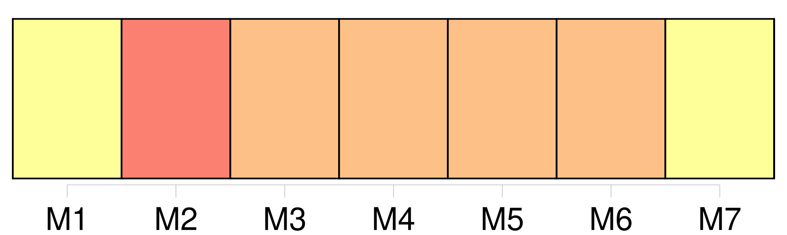
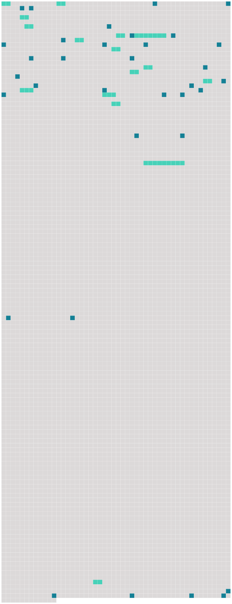

Longueur nb maillons : 50 mentions |
  |
[Les passagers] , peu nombreux, une cinquantaine en tout, étaient [des émigrés] , mais non des émigrés de basse origine, sans instruction, sans éducation. Il y avait parmi [eux] quelques avocats, deux médecins, des ingénieurs, des mécaniciens.
La fortune ne [leur] avait pas souri chez [eux] , [ils] cherchaient un pays plus favorable ; voilà tout. [4 phrases]
[Les passagers] se sentaient perdus. [7 phrases] » Le pont du « Queen of the Waves » se couvrit [de passagers] à l'instant, et à une distance de cinq milles, à peu près, [ils] purent voir se dessiner une sorte de promontoire. [6 phrases] Mais [les passagers] étaient [tous] [des hommes d'intelligence et de cœur]
[Ils] aidèrent les matelots à mettre les chaloupes à la mer — il n'y en avait que quatre — et, en risquant cent fois [leur] vie, [les passagers] furent mis en état de se sauver. Malheureusement, la dernière chaloupe, contenant le capitaine et les hommes de l'équipage, effleura un brisant de trop près, et [on] la vit s'enfoncer dans les flots bouillonnants de l'Océan.
C'était un grand malheur, car, si [on] parvenait à dégager le paquebot, comment parviendrait [-on] à lui faire reprendre la mer, sans capitaine et sans matelots! [1 phrases] [on] ne pouvait s'attarder à pleurer cette perte de l'équipage, il fallait aviser au plus pressé, et le plus vite possible. Quelques-uns [des naufragés] se dévouèrent : ils firent plusieurs voyages au bateau échoué, et en rapportèrent des provisions, des couvertures, des armes, etc. [2 phrases]
Une Terre Étrange … Les instruments manquant, [on] ne pouvait faire le point.
La seule chose certaine, c'était qu' [on] était sur une terre du Pacifique ; il fallait se contenter de ce renseignement, pour le moment. [1 phrases]
Évidemment, un tremblement de terre s'était produit là, à une époque peu éloignée : les plus entendus parmi [les naufragés] fixèrent cette date à deux ou trois ans au plus. [On] ne voyait pas un être vivant, ni homme ni bête. [2 phrases] Et pour le moment, [les naufragés] durent céder à une préoccupation plus impérieuse : celle de se réconforter par un peu de nourriture et de se reposer, car [tous] étaient, on le devine, exténués de fatigue. [1 phrases] Le lendemain, l'orage s'était calmé ; il faisait un soleil radieux, dont les chauds rayons mirent un peu d'espoir au cœur [des naufragés] Lorsqu' [on] eut déjeuné, et, cette fois, [on] se paya le luxe de café brûlant, il fut décidé qu'on irait en excursion de découverte. Il était important de savoir quelle était la nature de la terre sur laquelle [on] se trouvait ; était -ce une île ou bien le continent?? [Tous les naufragés] essayaient de se convaincre que cette dernière hypothèse était la bonne, car si l' [on] était sur le continent, il serait assez facile de regagner les régions habitées ; si, au contraire, [on] était sur une île inconnue ……
[On] ne voulait même pas s'arrêter à cette supposition, elle était trop épouvantable.
Mais dans tous les cas, [les pauvres naufragés] se confiaient en la Providence, qui ne pouvait pas [les] abandonner, et [leur] viendrait certainement en aide. [2 phrases]
d'un cercle presque infranchissable pour [les naufragés] [17 phrases]
… [on] ne savait pas en quelle partie de l'Océan [on] se trouvait, le « Queen of the Waves » s'étant échoué, après avoir battu la mer comme une épave. [8 phrases] Ils avaient la conviction que [les naufragés du « Queen of the Waves »] étaient voués à une mort certaine, sur ce rocher désert. [56 phrases]
[On] décida de renflouer immédiatement le « Nautilus », et dès le lendemain [on] se mit à l'œuvre. [134 phrases]
» [5 phrases] Sans le « Nautilus », [nous] étions condamnés à périr sur une île volcanique et déserte. [Nous] avons donné au capitaine des funérailles dignes de ses goûts et de ses exploits, et [nous] avons utilisé le bateau pour fuir les régions dangereuses où le naufrage [nous] avait jetés.
» |
 |
La ressource peut être téléchargée sur la page Ortolang
Si vous avez des questions ou vous voyez des erreurs, merci d'envoyer un mail à silvia.federzoni89@gmail.com
Site développé par S. Federzoni (contact)